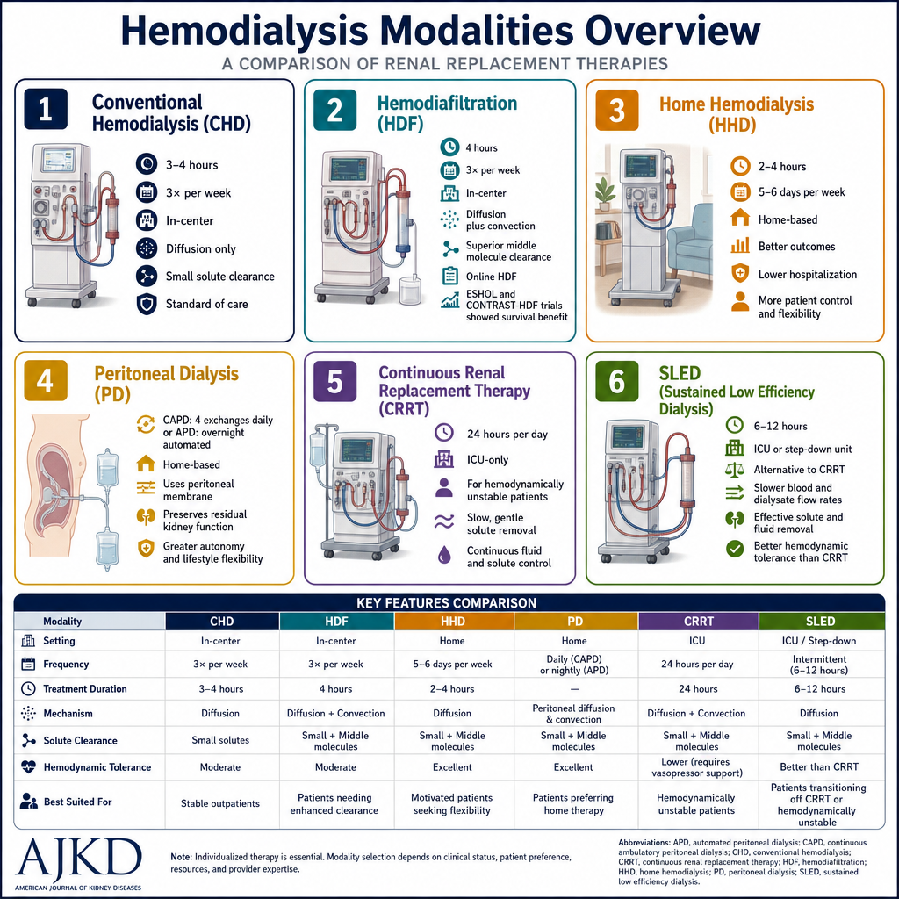
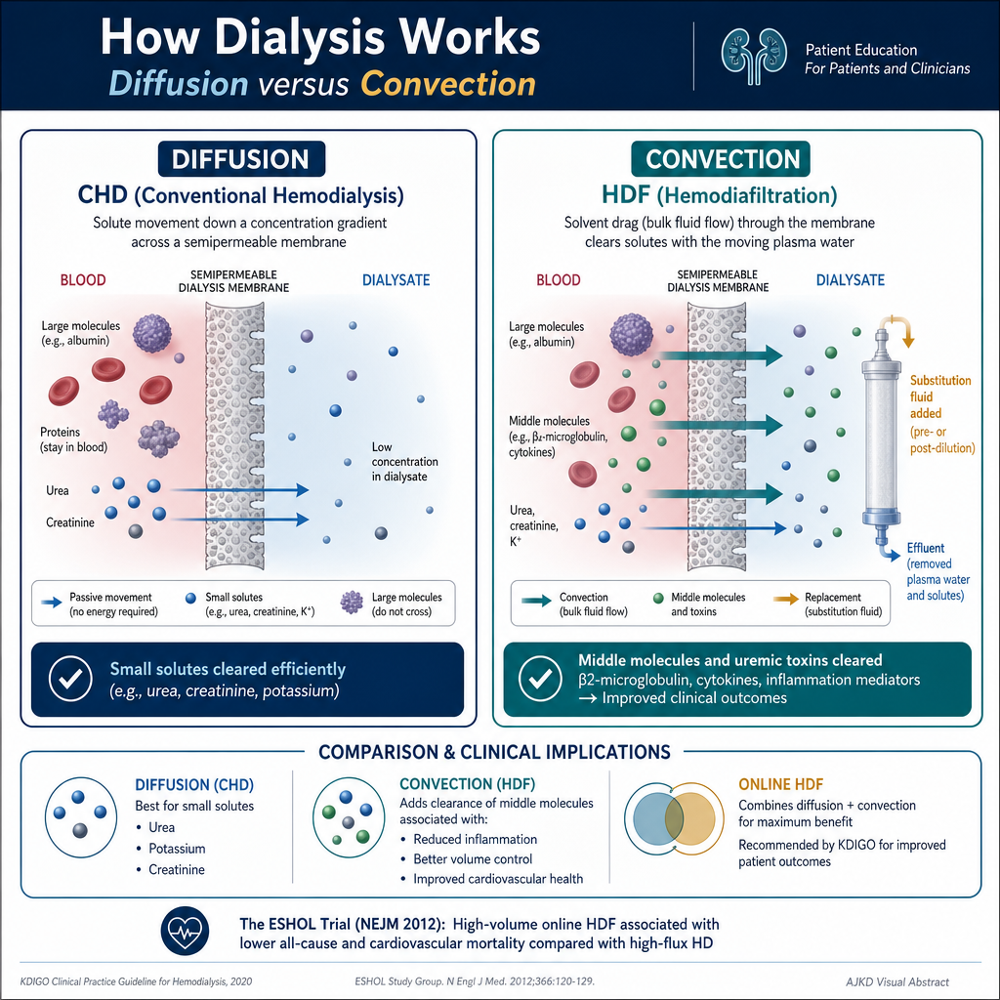
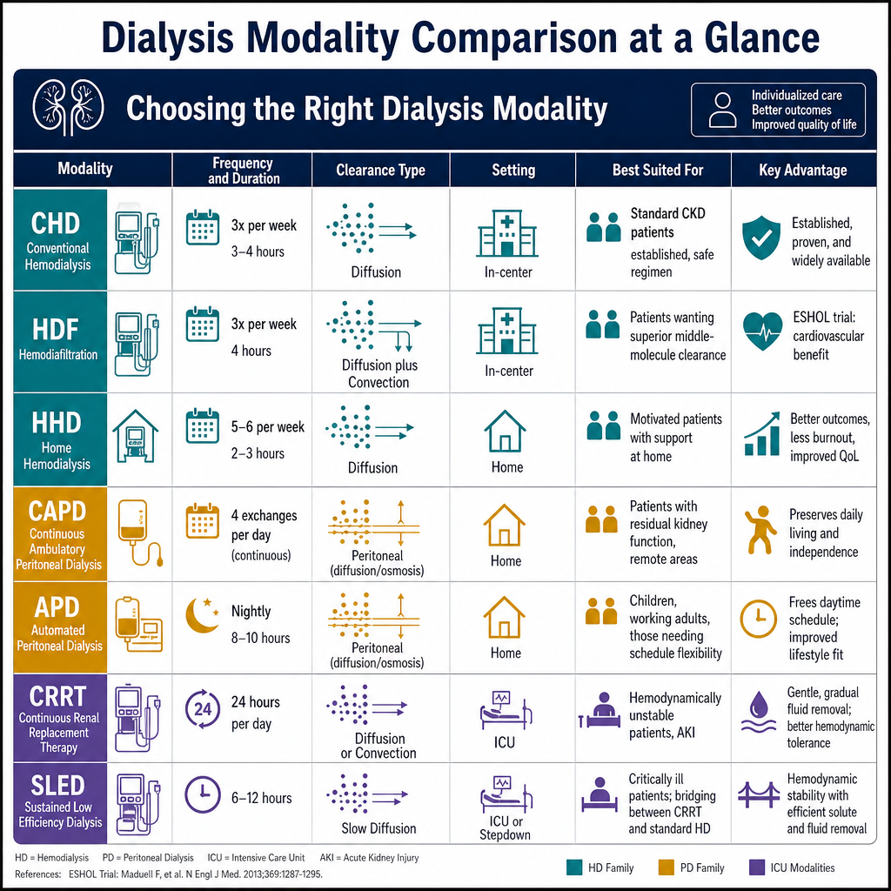

How Dialysis Removes Waste — Two PrinciplesPaano Nag-aalis ng Basura ang Diyalisis — Dalawang PrinsipyoUnsaon sa Diyalisis Pagkuha sa Basura — Duha ka Prinsipyo Paano Nag-aalis ning Basura ing Diyalisis — Dalawang Prinsipyo

An overview of six dialysis types — conventional hemodialysis, hemodiafiltration, home hemodialysis, peritoneal dialysis, CRRT, and SLED — comparing how each one works, how well it clears wastes, where it is done, and when it is typically used.
All dialysis modalities work through two physical principles: diffusion (molecules move across a semi-permeable membrane from high to low concentration) and convection (fluid and dissolved molecules are pushed through a membrane by pressure). The key difference between modalities is which molecules they clear most effectively — and this determines clinical outcomes.Lahat ng paraan ng diyalisis ay gumagana sa pamamagitan ng dalawang pisikal na prinsipyo: diffusion (ang mga molekulo ay gumagalaw sa semi-permeable membrane mula sa mataas hanggang mababang konsentrasyon) at convection (ang likido at mga natunaw na molekulo ay itinulak sa pamamagitan ng membrane sa pamamagitan ng presyon). Ang pangunahing pagkakaiba sa pagitan ng mga paraan ay kung aling mga molekulo ang pinaka-epektibong nililinis — at ito ang nagtatakda ng mga klinikal na resulta.Ang tanan nga mga pamaagi sa dialysis nagtrabaho pinaagi sa duha ka pisikal nga prinsipyo: diffusion (ang mga molekula mobalhin sa semi-permeable nga membrane gikan sa taas ngadto sa ubos nga konsentrasyon) ug convection (ang tubig ug natunaw nga mga molekula gipadunot sa membrane pinaagi sa presyon). Ang yawe nga kalainan taliwala sa mga pamaagi mao ang kung unsang mga molekula ang pinaka-epektibong nahilmo — ug kini nagtino sa mga klinikal nga resulta. Amin ning paraan ning diyalisis ya gumagana king pamamagitan ning dalawang pisikal a prinsipyo: diffusion (ing deng molekulo ya gumagalaw king semi-permeable membrane mula king matas anggang mababang konsentrasyon) at convection (ing likido at deng natunaw a molekulo ya itinulak king pamamagitan ning membrane king pamamagitan ning presyon). Ing pangunahing pagkakaiba king pagitan ning deng paraan ya nung aling deng molekulo ing pinaka-epektibong nililinis — at ini ing nagtatakda ning deng klinikal a resulta.
Diffusion clears small molecules well (urea, creatinine, potassium) but misses middle molecules. Convection uses pressure to push fluid through a larger-pore membrane — clearing middle molecules like β2-microglobulin that cause dialysis amyloidosis and cardiovascular disease over time.Ang diffusion ay epektibo sa maliliit na molekulo (urea, creatinine, potassium) ngunit hindi nito nililinis ang mga gitnang molekulo. Ang convection ay gumagamit ng presyon upang itulak ang likido sa pamamagitan ng mas malaking-butas na membrane — nililinis ang mga gitnang molekulo tulad ng β2-microglobulin na nagdudulot ng dialysis amyloidosis at sakit sa puso sa paglipas ng panahon.Ang diffusion maayo sa gagmay nga mga molekula (urea, creatinine, potassium) apan wala mahilmo ang mga gitnang molekula. Ang convection naggamit presyon sa pagpadunot sa tubig sa mas dako nga buho sa membrane — nahilmo ang mga gitnang molekula sama sa β2-microglobulin nga nagdala sa dialysis amyloidosis ug sakit sa kasingkasing sa paglabay sa panahon. Ing diffusion ya epektibo king maliliit a molekulo (urea, creatinine, potassium) ngarud ali nini nililinis ing deng gitnang molekulo. Ing convection ya gumagamit ning presyon upang itulak ing likido king pamamagitan ning mas malaking-butas a membrane — nililinis ing deng gitnang molekulo tulad ning β2-microglobulin a nagdudulot ning dialysis amyloidosis at sakit king pusu king paglipas ning panahon.

A comparison of the two ways dialysis removes wastes — diffusion and convection — showing how each works, which kinds of molecules each clears, and why convection's ability to remove larger middle molecules matters for long-term results.
Conventional Hemodialysis (CHD)Conventional Hemodialysis (CHD)Conventional Hemodialysis (CHD) Conventional Hemodialysis (CHD)
Conventional Intermittent HD (3×/week)Conventional Intermittent HD (3×/linggo)Conventional Intermittent HD (3×/semana) Conventional Intermittent HD (3×/lutu)
Blood is pumped at 250–400 mL/min through a dialyzer (artificial kidney) — a filter with thousands of hollow fiber membranes. Blood flows inside the fibers; dialysis solution flows in the opposite direction outside (countercurrent flow maximizes concentration gradient). Three sessions per week, 3.5–4.5 hours each.Ang dugo ay pinupump sa 250–400 mL/min sa pamamagitan ng dialyzer (artipisyal na bato) — isang filter na may libu-libong hollow fiber membranes. Ang dugo ay dumadaloy sa loob ng mga fiber; ang solusyong diyalisis ay dumadaloy sa kabaligtarang direksyon sa labas (ang countercurrent flow ay nagpapalaki ng concentration gradient). Tatlong sesyon bawat linggo, 3.5–4.5 oras bawat isa.Ang dugo gipump sa 250–400 mL/min sa dialyzer (artipisyal nga bato) — usa ka filter nga adunay libo-libo nga hollow fiber membranes. Ang dugo nagdagayday sulod sa mga fiber; ang solusyon sa diyalisis nagdagayday sa sukwahi nga direksyon sa gawas (ang countercurrent flow nagpadako sa concentration gradient). Tulo ka sesyon matag semana, 3.5–4.5 oras matag usa. Ing daya ya pinupump king 250–400 mL/min king pamamagitan ning dialyzer (artipisyal a batu) — metung a filter a atin libu-libong hollow fiber membranes. Ing daya ya dumadaloy king loob ning deng fiber; ing solusyong diyalisis ya dumadaloy king kabaligtarang direksyon king labas (ing countercurrent flow ya nagpapalaki ning concentration gradient). Tatlong sesyon bawat lutu, 3.5–4.5 oras bawat metung.
What it clears well: Urea, creatinine, potassium, phosphorus (partially), bicarbonate, water. What it misses: Middle molecules (β2-microglobulin, cytokines, protein-bound uremic toxins like indoxyl sulfate) — these accumulate over years and drive dialysis-related amyloidosis and cardiovascular disease.Ang mabuting nililinis nito: Urea, creatinine, potassium, phosphorus (bahagi), bicarbonate, tubig. Ang hindi nito nililinis: Mga gitnang molekulo (β2-microglobulin, cytokines, protein-bound na uremic toxins tulad ng indoxyl sulfate) — nag-iipon ang mga ito sa loob ng maraming taon at nagdudulot ng dialysis-related amyloidosis at sakit sa puso.Unsa ang maayo niyang nahilmo: Urea, creatinine, potassium, phosphorus (bahin), bicarbonate, tubig. Unsa ang wala niya mahilmo: Mga gitnang molekula (β2-microglobulin, cytokines, protein-bound nga uremic toxins sama sa indoxyl sulfate) — nagtipon kini sulod sa daghang tuig ug nagdala sa dialysis-related amyloidosis ug sakit sa kasingkasing. Ing mabuting nililinis nini: Urea, creatinine, potassium, phosphorus (bahagi), bicarbonate, danum. Ing ali nini nililinis: Deng gitnang molekulo (β2-microglobulin, cytokines, protein-bound a uremic toxins tulad ning indoxyl sulfate) — nag-iipon ing deng ini king loob ning dacal a banua at nagdudulot ning dialysis-related amyloidosis at sakit king pusu.
The inter-dialytic interval problemAng problema ng pagitan sa pagitan ng diyalisisAng problema sa inter-dialytic interval Ing problema ning pagitan king pagitan ning diyalisis
The 68-hour gap between Friday and Monday sessions is the most physiologically stressful period for conventional HD patients — potassium and fluid accumulate dangerously. The Monday morning post-weekend session has the highest cardiovascular event and death rate of any dialysis session. This has driven interest in more frequent modalities.Ang 68-oras na agwat sa pagitan ng sesyon ng Biyernes at Lunes ay ang pinaka-mapanganib na panahon para sa mga pasyenteng may conventional HD — ang potassium at likido ay nagtatipun-tipon nang mapanganib. Ang sesyon ng Lunes ng umaga pagkatapos ng weekend ay may pinakamataas na rate ng cardiovascular event at kamatayan sa lahat ng sesyon ng diyalisis. Ito ang nagudyok ng interes sa mas madalas na mga paraan.Ang 68-oras nga gintang taliwala sa sesyon sa Biyernes ug Lunes mao ang pinaka-mapeligro nga panahon alang sa mga pasyente nga conventional HD — ang potassium ug tubig nagtipon sa mapanganib nga antas. Ang sesyon sa Lunes sa buntag human sa weekend adunay pinakataas nga rate sa cardiovascular event ug kamatayon sa tanang sesyon sa diyalisis. Kini nagmando sa interes sa mas kanunay nga mga pamaagi. Ing 68-oras a agwat king pagitan ning sesyon ning Biyernes at Lunes ya ing pinaka-mapanganib a panahon para king deng pasyenteng atin conventional HD — ing potassium at likido ya nagtatipun-tipon nang mapanganib. Ing sesyon ning Lunes ning umaga kapabanuan ning weekend ya atin pinakamatas a rate ning cardiovascular event at kamatayan king amin ning sesyon ning diyalisis. Ini ing nagudyok ning interes king mas madalas a deng paraan.
Hemodiafiltration (HDF) — Adding ConvectionHemodiafiltration (HDF) — Pagdaragdag ng ConvectionHemodiafiltration (HDF) — Pagdugang sa Convection Hemodiafiltration (HDF) — Pagdaragdag ning Convection
Online Hemodiafiltration (OL-HDF)Online Hemodiafiltration (OL-HDF)Online Hemodiafiltration (OL-HDF) Online Hemodiafiltration (OL-HDF)
HDF combines diffusion (like conventional HD) with high-volume convective transport — producing 20–25 liters of ultrafiltrate per session and replacing this with ultrapure substitution fluid prepared online from the dialysis water supply. The result: dramatically superior clearance of middle molecules (β2-microglobulin, FGF-23, light chains, cytokines) while maintaining small molecule clearance equivalent to conventional HD.Pinagsama ng HDF ang diffusion (tulad ng conventional HD) sa mataas na dami na convective transport — gumagawa ng 20–25 litro ng ultrafiltrate bawat sesyon at pinapalitan ito ng ultrapure na substitution fluid na inihanda online mula sa supply ng tubig ng diyalisis. Ang resulta: napakahusay na paglilinis ng mga gitnang molekulo (β2-microglobulin, FGF-23, light chains, cytokines) habang pinapanatili ang paglilinis ng maliliit na molekulo na katumbas ng conventional HD.Gikombina sa HDF ang diffusion (sama sa conventional HD) sa high-volume nga convective transport — nagprodyus og 20–25 litro sa ultrafiltrate matag sesyon ug gipulihan kini sa ultrapure nga substitution fluid nga giandam online gikan sa supply sa tubig sa diyalisis. Ang resulta: mas maayo kaayo nga paglilimpyo sa mga gitnang molekula (β2-microglobulin, FGF-23, light chains, cytokines) samtang gipreserba ang paglilimpyo sa gagmay nga molekula nga katumbas sa conventional HD. Pinagsama ning HDF ing diffusion (tulad ning conventional HD) king matas a dami a convective transport — gumagawa ning 20–25 litro ning ultrafiltrate bawat sesyon at pinapalitan ini ning ultrapure a substitution fluid a inihanda online mula king supply ning danum ning diyalisis. Ing resulta: napakahusay a paglilinis ning deng gitnang molekulo (β2-microglobulin, FGF-23, light chains, cytokines) habang pinapanatili ing paglilinis ning maliliit a molekulo a katumbas ning conventional HD.
The ESHOL trial (2013) and subsequent meta-analyzes showed high-volume OL-HDF reduces all-cause mortality by 30–35% and cardiovascular mortality by 33–45% compared to conventional HD — one of the strongest outcome signals in the dialysis literature. KDIGO 2024 now suggests HDF for patients tolerating conventional HD who want improved outcomes.Ipinakita ng ESHOL trial (2013) at mga kasunod na meta-analysis na ang high-volume OL-HDF ay nagbabawas ng all-cause mortality ng 30–35% at cardiovascular mortality ng 33–45% kumpara sa conventional HD — isa sa pinakamalakas na signal ng resulta sa literatura ng diyalisis. Inirerekomenda na ngayon ng KDIGO 2024 ang HDF para sa mga pasyenteng nakakatagal ng conventional HD na nagnanais ng mas magandang resulta.Gipakita sa ESHOL trial (2013) ug mga sunod nga meta-analysis nga ang high-volume OL-HDF nagpaminus sa all-cause mortality og 30–35% ug cardiovascular mortality og 33–45% kumpara sa conventional HD — usa sa pinakamalakas nga signal sa resulta sa literatura sa diyalisis. Gisugyot na karon sa KDIGO 2024 ang HDF alang sa mga pasyente nga nakatagal sa conventional HD ug gusto og mas maayong mga resulta. Ipinakita ning ESHOL trial (2013) at deng kasunod a meta-analysis a ing high-volume OL-HDF ya nagbabawas ning all-cause mortality ning 30–35% at cardiovascular mortality ning 33–45% kumpara king conventional HD — metung king pinakamalakas a signal ning resulta king literatura ning diyalisis. Inirerekomenda a ngayon ning KDIGO 2024 ing HDF para king deng pasyenteng nakakatagal ning conventional HD a nagnanais ning mas magandang resulta.
Home Hemodialysis (HHD)Home Hemodialysis (HHD)Home Hemodialysis (HHD) Home Hemodialysis (HHD)
Short Daily HD or Nocturnal HD at HomeMaikling Araw-araw na HD o Nocturnal HD sa TahananShort Daily HD o Nocturnal HD sa Balay Maikling Aldo-aldo a HD o Nocturnal HD king Tahanan
Short daily home HD (5–6 sessions/week, 2–3 hours each) or nocturnal home HD (3–6 nights/week, 6–8 hours overnight while sleeping) provides dramatically more dialysis time than conventional in-center HD. The FHN daily trial and multiple cohort studies show: better BP control (often allowing antihypertensive reduction), superior phosphorus control, improved LV mass regression, better nutrition, higher quality of life, and improved survival.Ang maikling araw-araw na home HD (5–6 sesyon/linggo, 2–3 oras bawat isa) o nocturnal home HD (3–6 gabi/linggo, 6–8 oras sa gabi habang natutulog) ay nagbibigay ng mas matagal na oras ng diyalisis kaysa sa conventional in-center HD. Ipinakita ng FHN daily trial at maraming cohort study: mas mahusay na kontrol ng BP (madalas nagpapahintulot ng pagbabawas ng antihypertensive), mas mahusay na kontrol ng phosphorus, pagpapabuti ng LV mass regression, mas magandang nutrisyon, mas mataas na kalidad ng buhay, at pinahusay na kaligtasan.Ang short daily home HD (5–6 sesyon/semana, 2–3 oras matag usa) o nocturnal home HD (3–6 gabii/semana, 6–8 oras sa gabii samtang natulog) naghatag og mas daghan nga oras sa diyalisis kaysa conventional in-center HD. Gipakita sa FHN daily trial ug daghang cohort study: mas maayong kontrol sa BP (kanunay nagpahintulot sa pagpaminus sa antihypertensive), mas maayo nga kontrol sa phosphorus, pagpaayo sa LV mass regression, mas maayong nutrisyon, mas taas nga kalidad sa kinabuhi, ug pinahusay nga pag-ambit. Ing maikling aldo-aldo a home HD (5–6 sesyon/lutu, 2–3 oras bawat metung) o nocturnal home HD (3–6 gabi/lutu, 6–8 oras king gabi habang natutulog) ya nagbibigay ning mas matagal a oras ning diyalisis kaysa king conventional in-center HD. Ipinakita ning FHN daily trial at dacal a cohort study: mas mahusay a kontrol ning BP (madalas nagpapahintulot ning pagbabawas ning antihypertensive), mas mahusay a kontrol ning phosphorus, pagpapabuti ning LV mass regression, mas magandang nutrisyon, mas matas a kalidad ning biye, at pinahusay a kaligtasan.
Requires a trained home partner (family member or caregiver), home water treatment system, and machine. Not yet widely available in the Philippines — but represents the future direction of dialysis care for motivated patients with suitable home circumstances.Nangangailangan ng isang sinanay na home partner (miyembro ng pamilya o tagapag-alaga), sistema ng paggamot ng tubig sa bahay, at makina. Hindi pa malawak na available sa Pilipinas — ngunit kumakatawan sa direksyon ng hinaharap ng pangangalaga sa diyalisis para sa mga motivadong pasyenteng may angkop na kalagayan sa bahay.Nagkinahanglan og usa ka sinangay nga home partner (miyembro sa pamilya o caregiver), sistema sa pagtambal sa tubig sa balay, ug makina. Wala pa kini kaylap nga available sa Pilipinas — apan nagrepresentar sa direksyon sa umaabot sa pag-atiman sa diyalisis alang sa mga motivado nga pasyente nga may angay nga kahimtang sa balay. Nangangailangan ning metung a sinanay a home partner (miyembro ning pamilya o tagapag-alaga), sistema ning paggamut ning danum king bale, at makina. Ali pa malawak a available king Pilipinas — ngarud kumakatawan king direksyon ning hinaharap ning pangangalaga king diyalisis para king deng motivadong pasyenteng atin angkop a kalagayan king bale.
Peritoneal Dialysis (PD) — Using Your Own MembranePeritoneal Dialysis (PD) — Paggamit ng Sariling MembranePeritoneal Dialysis (PD) — Paggamit sa Imong Kaugalingon nga Membrane Peritoneal Dialysis (PD) — Paggamit ning Sariling Membrane
In PD, dialysate fluid is instilled into the peritoneal cavity through a surgically placed catheter. The peritoneum acts as the dialysis membrane — toxins and water move across it into the dialysate, which is then drained and replaced.Sa PD, ang likidong diyalisis ay ini-install sa peritoneal cavity sa pamamagitan ng surgical na catheter. Ang peritoneum ay gumaganap bilang membrane ng diyalisis — ang mga toxin at tubig ay dumadaan dito patungo sa diyalisis, na pagkatapos ay pinapalabas at pinalitan.Sa PD, ang likido sa diyalisis gibutang sa peritoneal cavity pinaagi sa surgical nga catheter. Ang peritoneum nagtrabaho isip membrane sa diyalisis — ang mga toxin ug tubig nagbalhin niini ngadto sa diyalisis, nga pagkahuman gipaagos ug gipulihan. King PD, ing likidong diyalisis ya ini-install king peritoneal cavity king pamamagitan ning surgical a catheter. Ing peritoneum ya gumaganap bilang membrane ning diyalisis — ing deng toxin at danum ya dumadaan dini patungo king diyalisis, a kapabanuan ya pinapalabas at pinalitan.
CAPD — Continuous Ambulatory PDCAPD — Continuous Ambulatory PDCAPD — Continuous Ambulatory PD CAPD — Continuous Ambulatory PD
Patient manually instills 2L of dialysate and allows 4–6 hours of dwell time before draining and refilling — 4 times daily. No machine needed. Freedom to move during dwell time. Continuous dialysis — no inter-dialytic toxin build-up. Available at lower cost in areas without electricity supply.Ang pasyente ay mano-manong naglagay ng 2L ng diyalisis at nagpapahintulot ng 4–6 oras ng dwell time bago mag-drain at mag-refill — 4 beses sa isang araw. Hindi kailangan ng makina. Kalayaang gumalaw sa oras ng dwell. Tuloy-tuloy na diyalisis — walang pag-iipon ng toxin sa pagitan ng diyalisis. Available sa mas mababang gastos sa mga lugar na walang suplay ng kuryente.Ang pasyente manwal nagbutang og 2L sa diyalisis ug nagpahintulot og 4–6 oras sa dwell time sa dili pa mag-drain ug mag-refill — 4 ka beses matag adlaw. Walay makina nga gikinahanglan. Kagawasan sa paglihok sa panahon sa dwell. Tuloy-tuloy nga diyalisis — walay pag-ipon sa toxin sa taliwala sa diyalisis. Available sa mas mubo nga gasto sa mga lugar nga walay suplay sa kuryente. Ing pasyente ya mano-manong naglagay ning 2L ning diyalisis at nagpapahintulot ning 4–6 oras ning dwell time bago mag-drain at mag-refill — 4 beses king metung a aldo. Ali kailangan ning makina. Kalayaang gumalaw king oras ning dwell. Tuloy-tuloy a diyalisis — alang pag-iipon ning toxin king pagitan ning diyalisis. Available king mas mababang gastos king deng lugar a alang suplay ning kuryente.
APD / CCPD — Automated PDAPD / CCPD — Automated PDAPD / CCPD — Automated PD APD / CCPD — Automated PD
A cycler machine performs 8–12 exchanges during 8–10 hours of sleep. Patient is free during the day. Superior quality of life — dialysis happens while sleeping. Preferred for employed patients, children, and those with back pain limiting manual exchanges.Ang cycler machine ay nagsasagawa ng 8–12 palitan sa loob ng 8–10 oras ng tulog. Ang pasyente ay malaya sa araw. Mas mataas na kalidad ng buhay — nangyayari ang diyalisis habang natutulog. Inirerekomenda para sa mga pasyenteng nagtatrabaho, mga bata, at mga may sakit sa likod na naglilimita sa manual na palitan.Ang cycler machine naghimo og 8–12 ka palitan sa 8–10 oras sa pagtulog. Ang pasyente gawasnon sa adlaw. Mas taas nga kalidad sa kinabuhi — ang diyalisis mahitabo samtang natulog. Gipinili alang sa mga pasyente nga nagtrabaho, mga bata, ug mga adunay sakit sa bukobuko nga naglimit sa manual nga palitan. Ing cycler machine ya nagsasagawa ning 8–12 palitan king loob ning 8–10 oras ning tulog. Ing pasyente ya malaya king aldo. Mas matas a kalidad ning biye — nangyayari ing diyalisis habang natutulog. Inirerekomenda para king deng pasyenteng nagtatrabaho, deng bata, at deng atin sakit king likod a naglilimita king manual a palitan.
Continuous Renal Replacement Therapy (CRRT)Continuous Renal Replacement Therapy (CRRT)Continuous Renal Replacement Therapy (CRRT) Continuous Renal Replacement Therapy (CRRT)
CRRT — CVVH / CVVHD / CVVHDFCRRT — CVVH / CVVHD / CVVHDFCRRT — CVVH / CVVHD / CVVHDF CRRT — CVVH / CVVHD / CVVHDF
Critically ill patients with AKI in the ICU often cannot tolerate the rapid fluid and solute shifts of conventional intermittent HD — they develop hypotension during treatment. CRRT runs continuously at slow rates (150–300 mL/min blood flow) — removing fluid and toxins gently over 24 hours, matching the body's capacity for re-equilibration.Ang mga kritikal na pasyenteng may AKI sa ICU ay madalas hindi makatagal sa mabilis na paglilipat ng likido at solute ng conventional intermittent HD — nagkakaroon sila ng hypotension sa panahon ng paggamot. Ang CRRT ay tumatakbo nang tuloy-tuloy sa mabagal na bilis (150–300 mL/min blood flow) — dahan-dahang inaalis ang likido at mga toxin sa loob ng 24 oras, na katugma sa kakayahan ng katawan para sa muling pag-aayos.Ang mga kritikal nga pasyente nga adunay AKI sa ICU kanunay dili makatagal sa dali nga pagbalhin sa tubig ug solute sa conventional intermittent HD — nagmugna sila og hypotension sa panahon sa pagtambal. Ang CRRT nagdagan nga tuloy-tuloy sa hinay nga bilis (150–300 mL/min blood flow) — hinay-hinay nga gikuha ang tubig ug mga toxin sa 24 oras, phù hợp sa kapasidad sa lawas alang sa muling pag-aayos. Ing deng kritikal a pasyenteng atin AKI king ICU ya madalas ali makatagal king mabilis a paglilipat ning likido at solute ning conventional intermittent HD — nagkakaroon sila ning hypotension king panahon ning paggamut. Ing CRRT ya tumatakbo nang tuloy-tuloy king mabagal a bilis (150–300 mL/min blood flow) — dahan-dahang inaalis ing likido at deng toxin king loob ning 24 oras, a katugma king kakayahan ning bangkî para king muling pag-aayos.
Modalities: CVVH (convection only), CVVHD (diffusion only), CVVHDF (both). Anticoagulation required — regional citrate anticoagulation (RCA) is preferred in bleeding-risk patients. CRRT is not superior to IHD for survival in unselected AKI — but is preferred when hemodynamic instability prevents conventional HD.Mga paraan: CVVH (convection lamang), CVVHD (diffusion lamang), CVVHDF (pareho). Kailangan ang anticoagulation — ang regional citrate anticoagulation (RCA) ay inirerekomenda para sa mga pasyenteng may panganib sa pagdurugo. Ang CRRT ay hindi mas mahusay kaysa IHD para sa kaligtasan sa hindi napiling AKI — ngunit inirerekomenda kapag ang hemodynamic instability ay pumipigil sa conventional HD.Mga pamaagi: CVVH (convection lamang), CVVHD (diffusion lamang), CVVHDF (duha). Gikinahanglan ang anticoagulation — ang regional citrate anticoagulation (RCA) gipinili alang sa mga pasyente nga may peligro sa pagdugo. Ang CRRT dili mas maayo kaysa IHD alang sa pagluwas sa dili napili nga AKI — apan gipinili kung ang hemodynamic instability nagpugong sa conventional HD. Deng paraan: CVVH (convection lamang), CVVHD (diffusion lamang), CVVHDF (pareho). Kailangan ing anticoagulation — ing regional citrate anticoagulation (RCA) ya inirerekomenda para king deng pasyenteng atin panganib king pagdurugo. Ing CRRT ya ali mas mahusay kaysa IHD para king kaligtasan king ali napiling AKI — ngarud inirerekomenda nung ing hemodynamic instability ya pumipigil king conventional HD.
SLED — Sustained Low Efficiency DialysisSLED — Sustained Low Efficiency DialysisSLED — Sustained Low Efficiency Dialysis SLED — Sustained Low Efficiency Dialysis
SLED / SLEDD — Sustained Low-Efficiency Daily DialysisSLED / SLEDD — Sustained Low-Efficiency Daily DialysisSLED / SLEDD — Sustained Low-Efficiency Daily Dialysis SLED / SLEDD — Sustained Low-Efficiency Daily Dialysis
SLED uses conventional HD equipment at lower blood flow (150–200 mL/min) and dialysate flow (150–300 mL/min) for 6–12 hours daily — providing more gentle solute and fluid removal than conventional 4-hour HD while using hospital HD machines rather than dedicated CRRT equipment. Cost-effective alternative to CRRT in hemodynamically compromised AKI patients. Allows machine and nursing staff to be shared across patients.Gumagamit ang SLED ng conventional HD equipment sa mas mababang blood flow (150–200 mL/min) at dialysate flow (150–300 mL/min) sa loob ng 6–12 oras araw-araw — nagbibigay ng mas mahinahong pagtanggal ng solute at likido kaysa conventional 4-oras na HD habang gumagamit ng HD machines ng ospital sa halip na dedikadong CRRT equipment. Matipid na alternatibo sa CRRT para sa mga pasyenteng may AKI na may hemodynamic compromise. Nagpapahintulot na ang makina at kawani ng nars ay maibahagi sa mga pasyente.Ang SLED naggamit sa conventional HD equipment sa mas ubos nga blood flow (150–200 mL/min) ug dialysate flow (150–300 mL/min) sulod sa 6–12 oras matag adlaw — naghatag og mas mahinay nga pagtangtang sa solute ug tubig kaysa conventional 4-oras nga HD samtang naggamit sa HD machines sa ospital imbes sa dedicated nga CRRT equipment. Matipid nga alternatibo sa CRRT alang sa mga pasyente nga may AKI ug hemodynamic compromise. Nagpahintulot nga ang makina ug nursing staff mabahin sa mga pasyente. Gumagamit ing SLED ning conventional HD equipment king mas mababang blood flow (150–200 mL/min) at dialysate flow (150–300 mL/min) king loob ning 6–12 oras aldo-aldo — nagbibigay ning mas mahinahong pagtanggal ning solute at likido kaysa conventional 4-oras a HD habang gumagamit ning HD machines ning ospital king halip a dedikadong CRRT equipment. Matipid a alternatibo king CRRT para king deng pasyenteng atin AKI a atin hemodynamic compromise. Nagpapahintulot a ing makina at kawani ning nars ya maibahagi king deng pasyente.
Increasingly used in Philippine tertiary hospitals where dedicated CRRT machines are limited. Provides equivalent AKI outcomes to CRRT in most hemodynamically unstable patients at lower cost.Lalong ginagamit sa mga tertiary hospital sa Pilipinas kung saan limitado ang mga dedikadong CRRT machine. Nagbibigay ng katumbas na mga resulta ng AKI sa CRRT sa karamihan ng mga pasyenteng hindi stable ang hemodynamics sa mas mababang gastos.Mas kanunay na gigamit sa mga tertiary hospital sa Pilipinas kung asa limitado ang mga dedicated nga CRRT machine. Naghatag og katumbas nga mga resulta sa AKI sa CRRT sa kadaghanan sa mga pasyente nga dili stable ang hemodynamics sa mas mubo nga gasto. Lalong ginagamit king deng tertiary hospital king Pilipinas nung saan limitado ing deng dedikadong CRRT machine. Nagbibigay ning katumbas a deng resulta ning AKI king CRRT king kadaklan ning deng pasyenteng ali stable ing hemodynamics king mas mababang gastos.

A side-by-side table comparing the main dialysis types — conventional hemodialysis, hemodiafiltration, home hemodialysis, peritoneal dialysis, CRRT, and SLED — by where and how often each is done, how well it clears middle molecules, its heart-health benefits, and the situations it best suits.
Modality Comparison at a GlancePaghahambing ng mga Paraan sa Isang SulyapPagkumpara sa mga Pamaagi sa Usa ka Talan-awon Paghahambing ning deng Paraan king Metung a Sulyap
| ModalityParaanPamaagi Paraan | SettingLugarLugar Lugar | FrequencyDalasFrequency Dalas | Middle molecule clearancePaglilinis ng gitnang molekuloPaglilimpyo sa gitnang molekula Paglilinis ning gitnang molekulo | Best forPinakamainam para saPinakamainam alang sa Pinakamainam para king |
|---|---|---|---|---|
| Conventional HDConventional HDConventional HD Conventional HD | In-centerSa sentroSa sentro King sentro | 3×/week, 4 hrs | PoorMahinaHuyang Mahina | Standard ESKD — all Philippine centersPamantayang ESKD — lahat ng sentro sa PilipinasStandard ESKD — tanan nga sentro sa Pilipinas Pamantayang ESKD — amin ning sentro king Pilipinas |
| OL-HDF (high-volume)OL-HDF (mataas na dami)OL-HDF (high-volume) OL-HDF (matas a dami) | In-centerSa sentroSa sentro King sentro | 3×/week, 4–5 hrs | Excellent (3–4× CHD)Napakahusay (3–4× CHD)Excellent (3–4× CHD) Napakahusay (3–4× CHD) | ESKD patients wanting best outcomes; amyloidosis preventionMga pasyenteng ESKD na nagnanais ng pinakamainam na resulta; pag-iwas sa amyloidosisMga pasyente nga ESKD nga gusto og labing maayo nga resulta; paglikay sa amyloidosis Deng pasyenteng ESKD a nagnanais ning pinakamainam a resulta; pag-iwas king amyloidosis |
| Home daily HDAraw-araw na home HDAdlaw-adlaw nga home HD Aldo-aldo a home HD | HomeTahananBalay Tahanan | 5–7×/week, 2–3 hrs | Good (more frequent)Maganda (mas madalas)Maayo (mas kanunay) Maganda (mas madalas) | Motivated patients with trained helper; best BP/QoLMga motivadong pasyente na may sinanay na katulong; pinakamainam na BP/QoLMga motivado nga pasyente nga adunay sinangay nga kaayo; pinakamainam nga BP/QoL Deng motivadong pasyente a atin sinanay a katulong; pinakamainam a BP/QoL |
| Nocturnal HDNocturnal HDNocturnal HD Nocturnal HD | Home or centerTahanan o sentroBalay o sentro Tahanan o sentro | 3–6 nights/week, 6–8 hrs | Very goodNapakagandaMaayo kaayo Napakaganda | Best phosphorus control; sleep compatiblePinakamainam na kontrol ng phosphorus; angkop sa pagtulogPinakamainam nga kontrol sa phosphorus; angay sa pagtulog Pinakamainam a kontrol ning phosphorus; angkop king pagtulog |
| CAPD | HomeTahananBalay Tahanan | Continuous (4 exchanges/day)Tuloy-tuloy (4 palitan/araw)Tuloy-tuloy (4 palitan/adlaw) Tuloy-tuloy (4 palitan/aldo) | ModerateKatamtamanKatamtaman Katamtaman | Residual kidney function preserved; remote areas; no electricity needed for machineNapapanatili ang natitirang paggana ng bato; malalayong lugar; hindi kailangan ng kuryente para sa makinaNapreserba ang nabilin nga paggana sa bato; maabot nga lugar; walay kuryente nga gikinahanglan alang sa makina Napapanatili ing natitirang paggana ning batu; malalayong lugar; ali kailangan ning kuryente para king makina |
| APD/CCPD | HomeTahananBalay Tahanan | Overnight 8–10 hrsGabi: 8–10 orasGabii: 8–10 oras Gabi: 8–10 oras | Moderate–GoodKatamtaman–MagandaKatamtaman–Maayo Katamtaman–Maganda | Working adults; children; better QoL than CAPDMga nagtatrabahong matatanda; mga bata; mas magandang QoL kaysa CAPDMga nagtrabaho nga mga hamtong; mga bata; mas maayong QoL kaysa CAPD Deng nagtatrabahong matatanda; deng bata; mas magandang QoL kaysa CAPD |
| CRRT | ICU | Continuous 24/7Tuloy-tuloy 24/7Tuloy-tuloy 24/7 Tuloy-tuloy 24/7 | Moderate (convective)Katamtaman (convective)Katamtaman (convective) Katamtaman (convective) | Hemodynamically unstable AKI; multiorgan failure; sepsisAKI na hindi stable ang hemodynamics; pagpalya ng maraming organ; sepsisAKI nga dili stable ang hemodynamics; pagpalya sa daghang organ; sepsis AKI a ali stable ing hemodynamics; pagpalya ning dacal a organ; sepsis |
| SLED | ICU / hospitalICU / ospitalICU / ospital ICU / ospital | 6–12 hrs daily | ModerateKatamtamanKatamtaman Katamtaman | AKI with mild-moderate instability; cost-effective CRRT alternativeAKI na may banayad-katamtamang instability; matipid na alternatibo sa CRRTAKI nga adunay hinay-katamtaman nga instability; matipid nga alternatibo sa CRRT AKI a atin banayad-katamtamang instability; matipid a alternatibo king CRRT |
Why your nephrologist may recommend HDF over conventional HDBakit maaaring irekomenda ng inyong nefrologo ang HDF kaysa conventional HDNgano ang inyong nephrologist mahimong morekomendar sa HDF kaysa conventional HD Bakit maaaring irekomenda ning inyu nefrologo ing HDF kaysa conventional HD
If you are receiving conventional hemodialysis and your center has the capacity for online HDF, ask your nephrologist about switching. The evidence for mortality benefit from high-volume OL-HDF is among the strongest in the dialysis literature. The main requirements are: a dialysis machine capable of HDF mode, online water purification infrastructure, and blood flows above 300 mL/min through your access.Kung kayo ay tumatanggap ng conventional hemodialysis at ang inyong sentro ay may kapasidad para sa online HDF, tanungin ang inyong nefrologo tungkol sa pagpapalit. Ang ebidensya para sa benepisyo sa mortality mula sa high-volume OL-HDF ay kabilang sa pinakamalakas sa literatura ng diyalisis. Ang mga pangunahing kinakailangan ay: isang makina ng diyalisis na may kakayahang gumawa ng HDF mode, imprastraktura ng online water purification, at blood flows na higit sa 300 mL/min sa pamamagitan ng inyong akses.Kung kamo nakadawat sa conventional hemodialysis ug ang inyong sentro adunay kapasidad alang sa online HDF, pangutan-a ang inyong nephrologist bahin sa pagbalhin. Ang ebidensya alang sa benepisyo sa mortality gikan sa high-volume OL-HDF usa sa pinakamalakas sa literatura sa diyalisis. Ang mga panguna nga kinahanglanon mao: usa ka makina sa diyalisis nga may kakayahan sa HDF mode, imprastraktura sa online water purification, ug blood flows nga labaw sa 300 mL/min pinaagi sa inyong akses. Nung kayu ya tumatanggap ning conventional hemodialysis at ing inyu sentro ya atin kapasidad para king online HDF, tanungin ing inyu nefrologo tungkol king pagpapalit. Ing ebidensya para king benepisyo king mortality mula king high-volume OL-HDF ya kabilang king pinakamalakas king literatura ning diyalisis. Ing deng pangunahing kinakailangan ya: metung a makina ning diyalisis a atin kakayahang gumawa ning HDF mode, imprastraktura ning online water purification, at blood flows a higit king 300 mL/min king pamamagitan ning inyu akses.